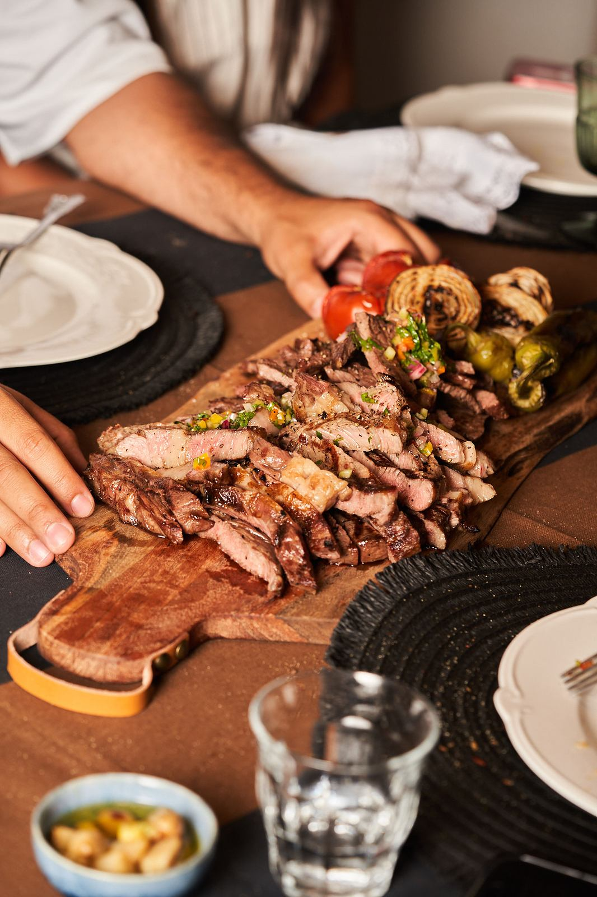

כמה עולה שף פרטי? ממה מורכב המחיר של ארוחת שף בבית

זו השאלה שכמעט כל אחד שואל ראשונה, ובצדק. התשובה הכנה היא שאין מחיר אחד: ארוחת שף נבנית מאפס סביב הערב שלכם, ולכן גם המחיר. מה שכן אפשר לדעת מראש הוא ממה הוא מורכב, ואיך לקבל הצעה שאין בה הפתעות.
אין מחיר אחד לשף פרטי, כי כל ערב נבנה מאפס. המחיר נקבע בעיקר לפי מספר האורחים, מספר המנות וסוג חומרי הגלם, ולפי מה שכלול בהצעה: הגשה, כלים וצוות. הדרך לדעת היא לשלוח תאריך ומספר אורחים, ולקבל הצעה מסודרת שכתוב בה בדיוק מה כלול.
למה אין מחיר אחד לשף פרטי?
מסעדה מתמחרת מנה. שף פרטי מתמחר ערב שלם: התפריט שנכתב בשבילכם, חומרי הגלם שנקנו בשבילו, הזמן במטבח לפני שהאורחים מגיעים, הבישול וההגשה במקום. שני ערבים עם אותו מספר אורחים יכולים להיראות אחרת לגמרי, ולכן גם לעלות אחרת.
מה משפיע על המחיר?
כמעט כל הצעת מחיר נבנית מאותם רכיבים. כדאי להכיר אותם, כי ברובם אתם יכולים לשלוט.
| רכיב | למה הוא משנה |
|---|---|
| מספר האורחים | יותר צלחות, יותר חומרי גלם ויותר זמן הכנה. |
| מבנה התפריט | כמה מנות יוצאות לשולחן, והאם זו הגשה אישית או מנות משותפות. |
| חומרי הגלם | דג טרי או נתח בשר מיוחד עולים יותר מירקות העונה. |
| הגשה וצוות | בערב גדול לפעמים צריך ידיים נוספות להגשה ולפינוי. |
| כלים וציוד | צלחות, כוסות, מפות וכלי הגשה: מה יש אצלכם ומה צריך להביא או לשכור. |
מה לבדוק שכתוב בהצעת המחיר?
הצעה טובה היא הצעה שאפשר להבין ממנה בדיוק מה מקבלים. לפני שמאשרים, ודאו שכתובים בה:
- התפריט עצמו - המנות, ולא רק "ארוחת שף".
- חומרי הגלם - האם הם כלולים, או שחלק מהם עליכם.
- מספר האורחים - ומה קורה אם הוא משתנה ברגע האחרון.
- הגשה, כלים וציוד - מה השף מביא ומה צריך להיות אצלכם.
- שעת הגעה ופינוי - מתי השף מגיע, ומה מצב המטבח בסוף הערב.
איך מקבלים הצעת מחיר מדויקת?
ככל שהשף יודע יותר, ההצעה מדויקת יותר. בהודעה הראשונה כדאי לכתוב תאריך משוער, מספר אורחים, איזה ערב זה (יום הולדת, ארוחת חברים, אירוע משפחתי), מה אוהבים ומה לא, ומסגרת תקציב גם אם היא רק בערך. ליאב מקבל פניות בהודעה באינסטגרם או בוואטסאפ, ומשם בונים יחד תפריט שמתאים גם לשולחן וגם לתקציב.
איך משווים בין שתי הצעות?
לא לפי המספר בשורה התחתונה. הצעה זולה יותר שלא כוללת חומרי גלם או הגשה יכולה לצאת יקרה יותר בסוף. השוו מה כלול בכל אחת, בקשו לראות תמונות אמיתיות מערבים קודמים, ושאלו איך מטפלים באלרגיות. אם אתם מתלבטים בכלל בין שף לקייטרינג, כתבנו על ההבדלים כאן.
שאלות נפוצות
המחיר של שף פרטי הוא לפי סועד או לפי ערב?
יש שפים שמתמחרים לפי סועד ויש שמתמחרים ערב שלם. בכל מקרה, כדאי לבדוק מה כלול במחיר ולא להשוות רק את המספר בשורה התחתונה.
אפשר לבנות תפריט לפי תקציב?
כן. כשמספרים מראש על מסגרת התקציב, גם אם היא רק בערך, אפשר להתאים אליה את מספר המנות, את חומרי הגלם ואת סגנון ההגשה.